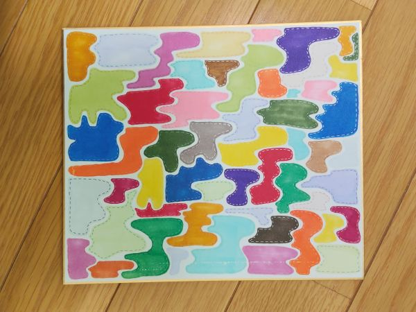
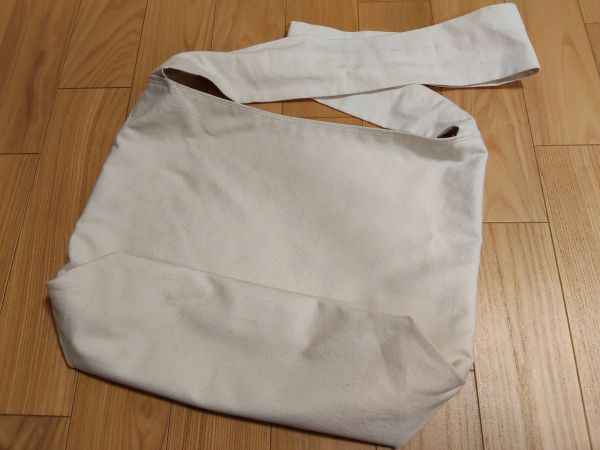
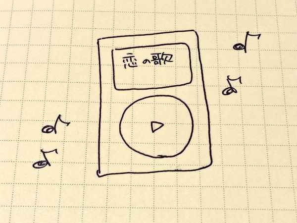

- トップ >
- 趣味が続く部屋
趣味が続く部屋
私が続けている趣味を紹介していきます。
101号室（お絵描き）

100円ショップで売っているカラーペンとキラキラボールペンを使用して描いたイラストです。このイラストのそれぞれの形は、その時々で思いついたものを適当に描きました。完成した時の達成感はものすごかったです。
102号室（ミシン）

動画配信サイトで作り方を参考にさせていただき、実際に作ったななめ掛けのカバンです。実際に学校に持っていっていますが、全く壊れる気配はありません。しかも大容量で愛用しています。
103号室（音楽さん）

音楽を聴くのはずっと続いてます。最近は、自分の中でおしゃれだな～っていう曲を探すのにハマっています。音楽の世界は広くて、全く飽きません。主に聞く曲のジャンルは、K-POPですが、最近はJ-POPにもハマってきました。 音楽を聴くと非現実的な感じがして、いつもの日常が、さらに楽しい空間になる気がするので音楽は大好きな趣味です。